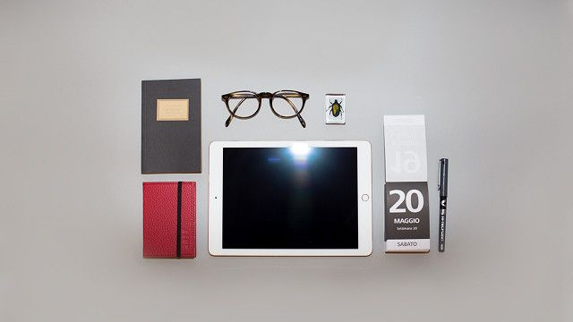

Проскануйте своє тіло
Аби відчути бажану гармонію, варто прислухатися до сигналів, які нам часто подає наше тіло.
- Розкрийте долоні й покладіть їх на коліна, якщо ви сидите або ж опустіть їх, якщо стоїте.
- Ноги слід поставити таким чином, щоб ступні повністю стояли на підлозі та не схрещувалися.
- Саме в такій позі вам потрібно максимально поринути у свої думки та тактильні відчуття.
- “Внутрішнім поглядом” пройдіться по всьому тілу від п’яток до голови.
- Дайте собі відповідь на запитання: “Що я відчуваю саме зараз?”.
- Важливо фіксувати всі деталі: легкий вітерець, що лоскоче тіло, пришвидшене серцебиття і т.д.
Сфокусуйтеся на тому, що вас оточує
- Важливо повернутися в реальність.
- Уважно розгляньте все, що стоїть навколо: ноутбук, пляшку води.
- Опишіть кольори, форму, текстуру, запах, смак.
- Це допоможе вам відчути себе тут і зараз.
Створіть собі кокон безпеки
Обійми — найкращі ліки проти страху.
Обійміть себе руками або загорніться в плед чи ковдру.
Таким чином ми створюємо собі захист і своєрідний щит від усієї небезпеки.
Слідкуйте за диханням
Коли ми відчуваємо тривогу, варто контролювати своє дихання, адже воно відіграє важливо роль для нашого організму.
Аби відновити нормальний темп дихання, зробіть глибокий вдих, затримайте повітря на кілька секунд та повільно видихайте його так, щоб видих був довшим за вдих удвічі.
Шукайте позитив
Спробуйте бодай частково позбутися від негативних думок, які не дають вам спокою.
Для цього існує чимало психологічних практик.
Наамагайтеся подивитися на ситуацію, яка вас пригнічує, з почуттям гумору. Через деякий час на багато життєвих невдач можна подивитися інакше і посміятися з себе і свого похмурого настрою. Наприклад: "Я зараз маю вигляд, як дитина, якій не дали цукерку" або "Я схожа на монстра з фільмів жахів. Пора усміхнутися".